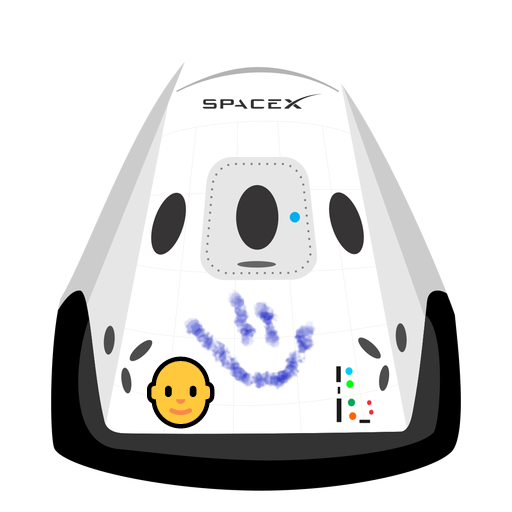

Hyperblog
Tu blog de cabecera
Este es el título atractivo e interesante del post
Y este es el párrafo de inicio donde vamos a explicar las cosas increíbles que se pueden hacer con ramas

Los blog son la mejor forma de compartir información y tus ideas. Mucho mas que or a conferencias o salir en YouTube. Excepto si eres un rockstar. Pero estadísticamente no lo eres....... por ahora.
Suscribete y dale like 👍